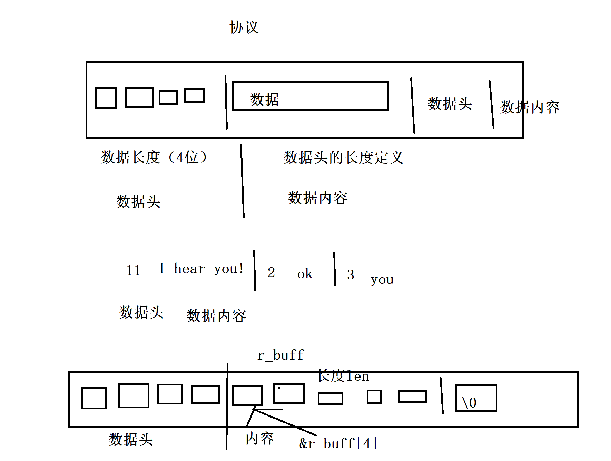

05. 一次连接多次请求
一、通信协议定义
我们的服务器将能够处理来自客户端的多个请求，因此我们需要实现一种"协议"，以至少将请求从TCP字节流中分开。最简单的方法是在请求的开头声明请求的长度。让我们采用以下方案。
消息1长度|消息1|消息2长度|消息2|等等... 该协议由两部分组成：一个4字节的整数，表示请求的长度，以及可变长度的请求内容。

二、修改服务端连接
然后修改代码如下，一次连接可以处理多个请求
while (true) {
// accept
struct sockaddr_in client_addr = {};
socklen_t addrlen = sizeof(client_addr);
int connfd = accept(fd, (struct sockaddr *) &client_addr, &addrlen);
if (connfd < 0) {
continue; // error
}
while (true) {
int32_t err = process_on_request(connfd);
if (err) {
break;
}
}
close(connfd);
}
process_on_request函数只解析并响应一个请求，直到发生错误或客户端连接丢失。我们的服务器一次只能处理一个连接，之后我们会改进这个程序支持多个客户端连接。
三、建立IO工具方法
这里我们建立两个工具方法，在后面的process_on_request中使用
#include "common.h"
/**
* 读取连接（fd）中的最多n byte数据，并存入buf中
* @return 返回0，成功，-1失败
* 通过多次读取，最多读取n bytes的数据
*/
int32_t read_message(int fd, char *buf, size_t n) {
while (n > 0) {
ssize_t n_bytes_read = read(fd, buf, n);
if (n_bytes_read <= 0) {
// 两种情况会退出循环，1）读到末尾了 2）客户端关闭，网络错误
return -1; // error, or unexpected EOF
}
n -= (size_t)n_bytes_read;
buf += n_bytes_read;
}
return 0;
}
/**
* 向连接fd写入n byte buffer中的数据
* @return 返回0，成功，-1失败
*/
int write_message(int fd, const char *buf, size_t n) {
while (n > 0) {
ssize_t n_bytes_write = write(fd, buf, n);
if (n_bytes_write <= 0) {
return -1; // error
}
n -= (size_t)n_bytes_write;
buf += n_bytes_write;
}
return 0;
}
这里read和write函数如果没有数据将阻塞，直到读取n或者写入n个byte数据为止。
四、process_on_request实现
int32_t process_on_request(int conn_fd) {
// 4 byte header, string array +1
char r_buff[4 + MAX_MESSAGE_LEN + 1];
errno = 0;
// 读取头，4byte
int32_t err = read_message(conn_fd, r_buff, 4);
if (err) {
if (errno == 0) {
printf("read header complete");
} else {
printf("read header error");
}
return err;
}
uint32_t len = 0;
memcpy(&len, r_buff, 4);
if (len > MAX_MESSAGE_LEN) {
printf("message too long");
return -1;
}
// 读取消息内容，通过读取头获取
err = read_message(conn_fd, &r_buff[4], len);
if (err) {
perror("read failed");
return err;
}
// 打印消息内容
r_buff[4 + len] = '\0';
printf("client says: %s\n", &r_buff[4]);
// 回复给客户端内容
const char reply[] = "world";
char w_buf[4 + sizeof(reply)];
len = (uint32_t) strlen(reply);
memcpy(w_buf, &len, 4);
memcpy(&w_buf[4], reply, len);
return write_message(conn_fd, w_buf, 4 + len);
}
为方便起见，我们对最大请求大小设定了一个限制，并使用足够大的缓冲区来容纳一个请求。在解析协议时，端序曾经是一个考虑因素，但在今天已经不那么重要了，所以我们只是直接使用 memcpy 来处理整数。
四、客户端实现
static int32_t send_message(int fd, const char *text) {
uint32_t len = (uint32_t) strlen(text);
if (len > MAX_MESSAGE_LEN) {
return -1;
}
// header 4 byte
char wbuf[4 + MAX_MESSAGE_LEN];
memcpy(wbuf, &len, 4); // assume little endian
memcpy(&wbuf[4], text, len);
int32_t err = write_message(fd, wbuf, 4 + len);
if (err) {
return err;
}
// 4 bytes header, +1 for string array
char rbuf[4 + MAX_MESSAGE_LEN + 1];
errno = 0;
err = read_message(fd, rbuf, 4);
if (err) {
if (errno == 0) {
printf("read complete");
} else {
perror("read error");
}
return err;
}
memcpy(&len, rbuf, 4); // assume little endian
if (len > MAX_MESSAGE_LEN) {
printf("message too long");
return -1;
}
// reply body
err = read_message(fd, &rbuf[4], len);
if (err) {
printf("message too long");
return err;
}
// print server message
rbuf[4 + len] = '\0';
printf("server says: %s\n", &rbuf[4]);
return 0;
}
main.c
send_message(fd, "消息1");
send_message(fd, "消息2");
send_message(fd, "消息3");
标签：无